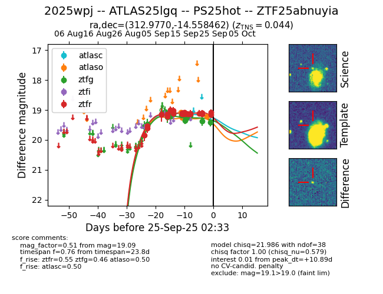
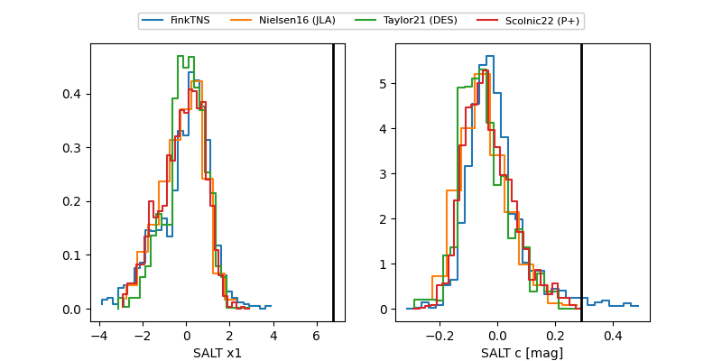

FINK: ZTF25abnuyia
Lasair: ZTF25abnuyia
ALeRCE: ZTF25abnuyia
TNS: 2025wpj
YSE: 2025wpj
ZTF25abnuyia (ztf,fink)
2025wpj (tns,yse)
ATLAS25lgq (atlas)
PS25hot (panstarrs)
equatorial (ra, dec) = (312.9770,-14.55846)
galactic (l, b) = (32.7773,-33.15150)


last atlasc=19.26, atlaso=19.21, ztfg=19.41, ztfr=19.09
1 atlasc, 3 atlaso, 14 ztfg, 21 ztfr detections